ggplot(penguins, aes(x = bill_length_mm, colour = species)) +
geom_histogram()Warning: Removed 2 rows containing non-finite values (stat_bin).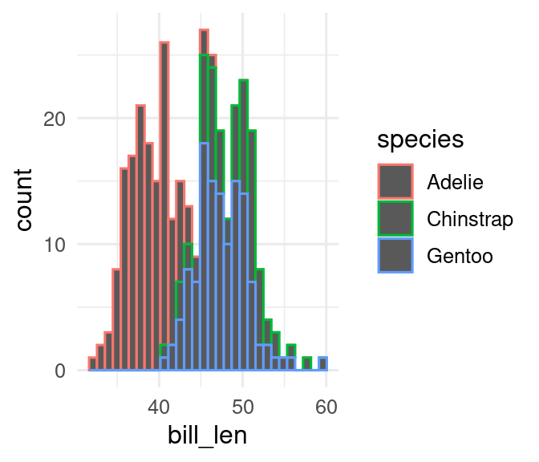


The colour aesthetic give colour for points and lines, while the fill aesthetic gives colour to areas. It is very easy to forget this.
ggplot(penguins, aes(x = bill_length_mm, colour = species)) +
geom_histogram()Warning: Removed 2 rows containing non-finite values (stat_bin).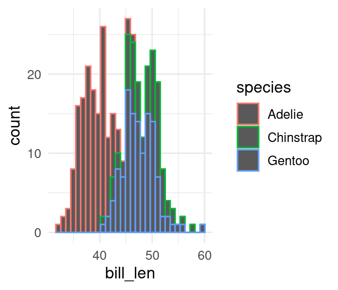
You can set the colour of points or lines and the fill of areas by setting it in the geom_*() used.
ggplot(penguins, aes(x = flipper_length_mm)) +
geom_histogram(colour = "purple", fill = "pink")`stat_bin()` using `bins = 30`. Pick better value with `binwidth`.Warning: Removed 2 rows containing non-finite values (stat_bin).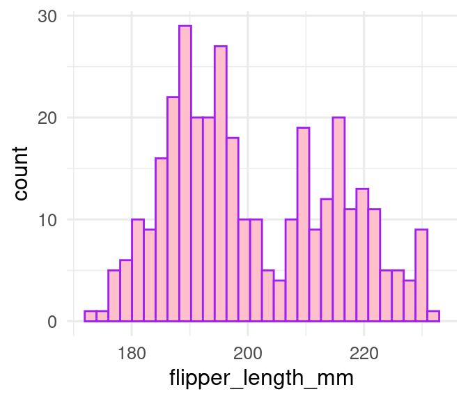
If you map a variable to the colour aesthetic, for points and lines, or the fill aesthetics for areas, ggplot will give you different colours/fills for the different values in the variable. If you don’t like the default colours/fills, and you shouldn’t because they are not colour blind friendly, then you can change them with a scale_colour_*() or scale_fill_*. First you need to decide what type of colour/fill scale you need.
The first decision is whether the scale should be continuous or discrete.
Discrete scales are automatically used when the variable mapped to colour or fill is a character or factor variable. If you want to use a discrete scale on a numeric variable, for example, if 0 represents Male and 1 represents Female (this is a bad idea), then you need to coerce it to a factor with factor(). If you don’t do this, you will get an error.
There is a choice of four types of discrete colour/fill scales
Qualitative palettes have no natural order to the colours. Use them for categorical variables. In the penguins dataset, species, island, and sex are categorical variables.
ggplot(penguins, aes(x = flipper_length_mm, fill = species)) +
geom_density()Warning: Removed 2 rows containing non-finite values (stat_density).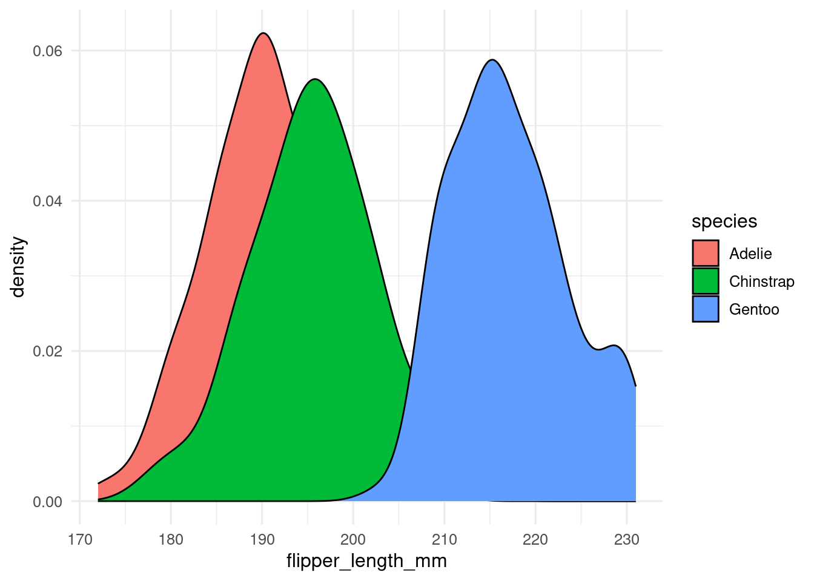
You can change the default colours/fill by either picking your own colours with scale_colour_manual() or scale_fill_manual().
ggplot(penguins, aes(x = flipper_length_mm, fill = species)) +
geom_density() +
scale_fill_manual(values = c(Adelie = "pink", Chinstrap = "purple", Gentoo = "green"))Warning: Removed 2 rows containing non-finite values (stat_density).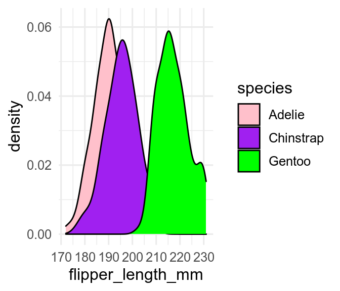
Picking your own colours can be hard!
Normally better to use some built in qualitative palettes, for example these from the RColorBrewer package.
RColorBrewer::display.brewer.all(type = "qual")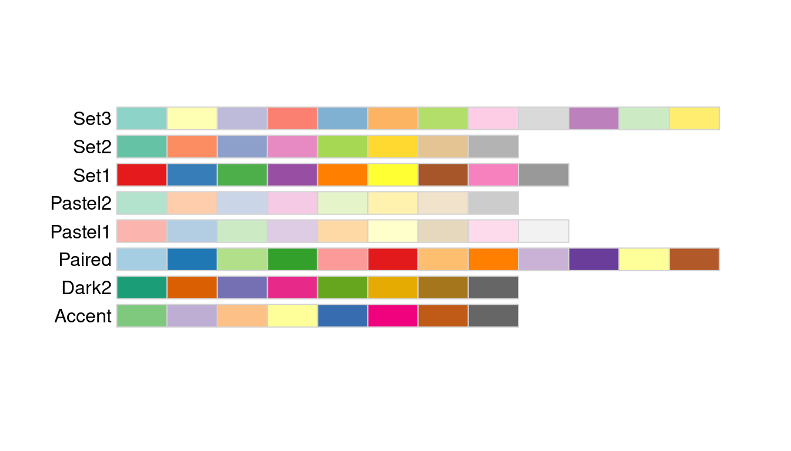
You can use these with scale_colour_brewer() or scale_fill_brewer()
ggplot(penguins, aes(x = flipper_length_mm, fill = species)) +
geom_density() +
scale_fill_brewer(palette = "Set1")Warning: Removed 2 rows containing non-finite values (stat_density).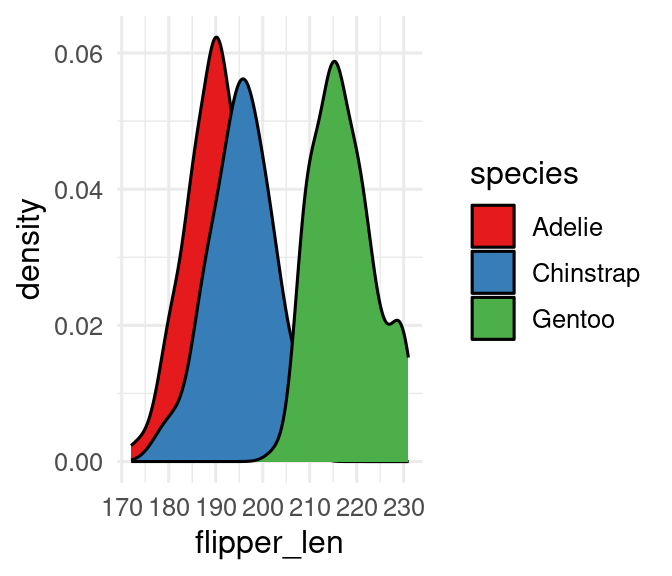
Sequential colour/fill scales are useful for ordinal variables - for example, high, medium, and low concentrations of a treatment drug.
Here are some examples from the RColorBrewer package, which can be used as above.
RColorBrewer::display.brewer.all(type = "seq")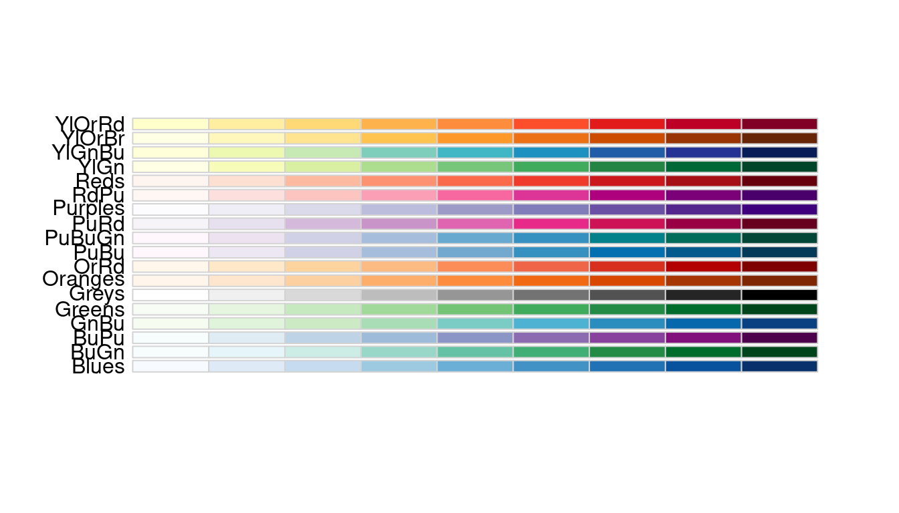
Another example of a sequential colour/fill palette is viridis, which can be used with scale_fill_viridis_d().
Diverging colour/fill scales are useful for ordinal variables with a natural midpoint, which might be zero, or the mean of the data.
Here are some examples from the RColorBrewer package, which can be used as above.
RColorBrewer::display.brewer.all(type = "div")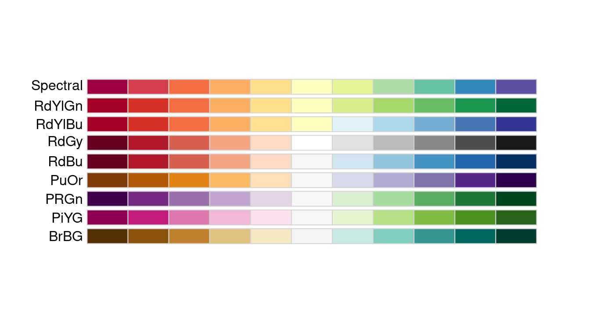
Highlights are useful when you want to focus on some of the data by showing it in colour and setting the remainder to grey. You can do this in several ways, but the easiest is to use the gghighlight package.
gghighlight takes a logical statement which determines which points or lines get coloured. This plot focuses on the Adelie penguins.
library(gghighlight)
ggplot(penguins, aes(x = body_mass_g, y = bill_length_mm, colour = species)) +
geom_point() +
gghighlight(species == "Adelie")Warning: Tried to calculate with group_by(), but the calculation failed.
Falling back to ungrouped filter operation...Warning: Removed 2 rows containing missing values (geom_point).Warning: Removed 1 rows containing missing values (geom_point).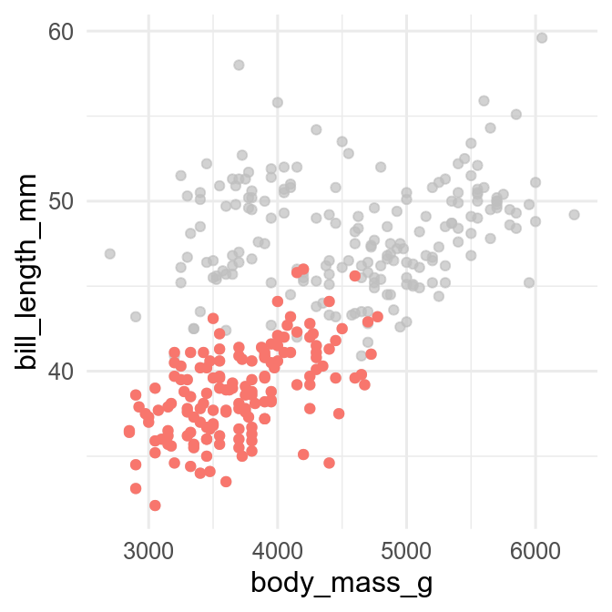
Continuous colour/fill scales are used for continuous variables. They can be directional or diverging.
You can make your own continuous colour/fill scales with scale_colour_gradient() with two colours of your choice. scale_fill_gradient2() will make a diverging scale by adding a mid-point colour.
It can be better to use existing colour scales. scale_fill_viridis_c() is a popular continuous scale. You can also use interpolated versions of RColorBrewer palettes with scale_fill_distiller().
Continuous colour/fill scales also can be binned (just a a histogram bins the data on the x-axis) with scale_fill_binned(), scale_fill_viridis_b()for binned viridis palettes, or scale_colour_fermenter() for binned RColorBrewer palettes.
Here are many examples of colour palettes in the paletteer package
About 1/8 men and 1/200 women are colour blind. We need to use colour and fill palettes that are colourblind friendly. Some popular scales are not. For example, we can use the colorBlindness to simulate how this figure is perceived by people with different forms of colour vision deficiency.
p3 <- ggplot(penguins, aes(x = flipper_length_mm, fill = species)) +
geom_density(alpha = 0.5) +
scale_fill_discrete()
p3Warning: Removed 2 rows containing non-finite values (stat_density).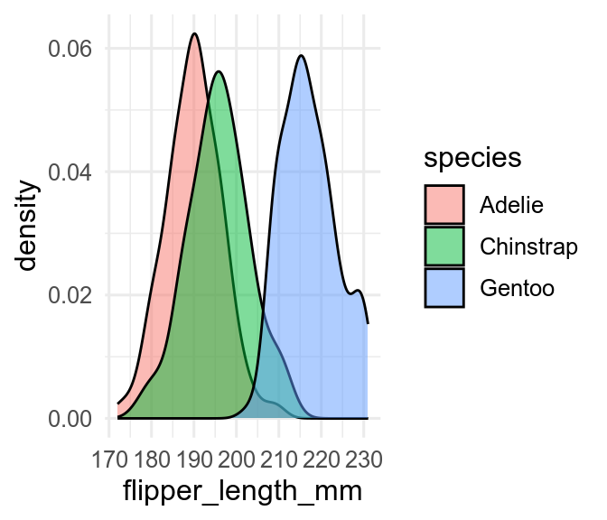
Warning: Removed 2 rows containing non-finite values (stat_density).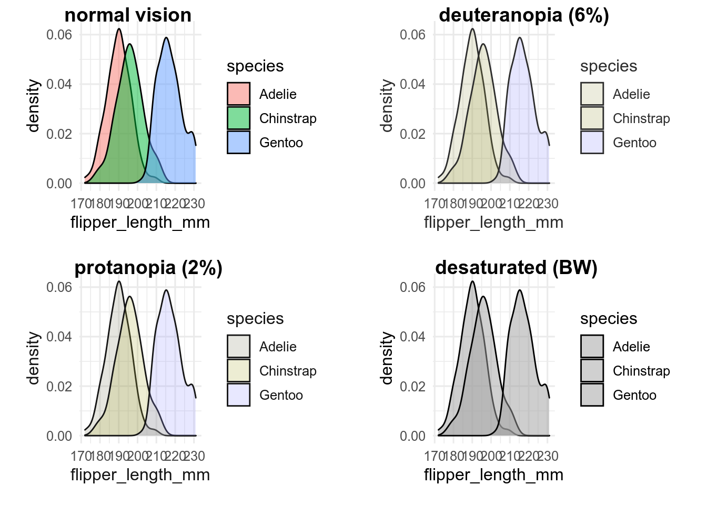
That was hopeless. It won’t even print well in black and white (shown by the Desaturated panel). Let’s try a different palette.
p3_v <- p3 + scale_fill_viridis_d()
p3_vWarning: Removed 2 rows containing non-finite values (stat_density).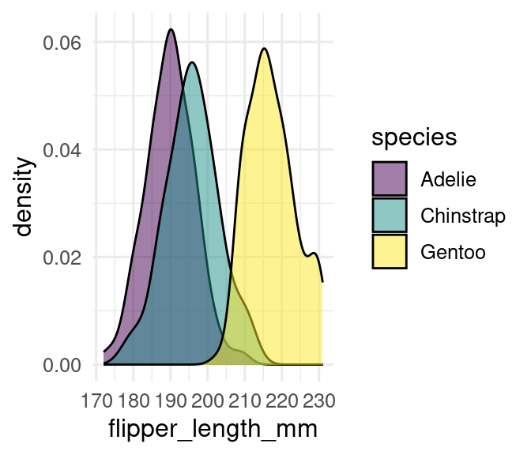
Warning: Removed 2 rows containing non-finite values (stat_density).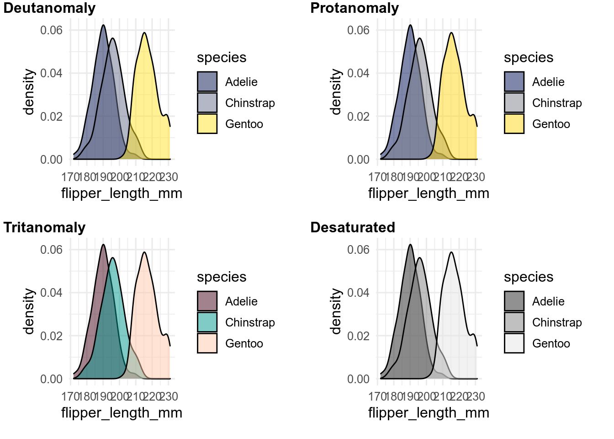
Much better. Always test that your colour palette is colourblind friendly, or use one known to be ok.
Transparency is set by the alpha aesthetic, where 0 is completely transparent and 1 is opaque. The overlap between partially transparent objects is more opaque.
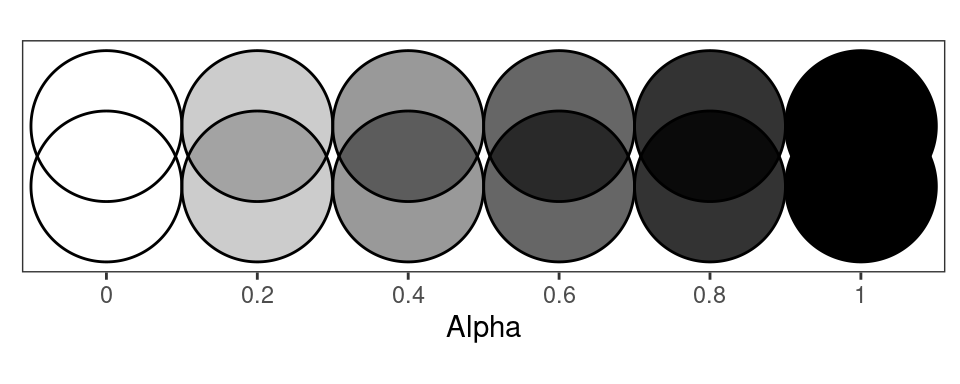
You can map a variable to alpha in aes(), but it is probably more common to set alpha. This is very useful, for example, when there are many overlapping points in a scatterplot, or you want to see the data behind the confidence interval of a regression line (Section 17.2). Be careful using transparency when different colours overlap, as it can appear to make a third colour.
You can change the shape of all the points made by, for example, geom_point() by setting the shape.
ggplot(penguins, aes(x = bill_length_mm, y = bill_depth_mm)) +
geom_point(shape = 4)Warning: Removed 2 rows containing missing values (geom_point).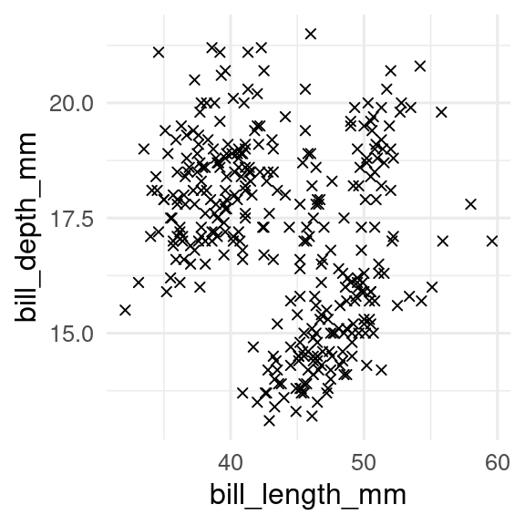
If you map a discrete variable to the shape aesthetic, points made by geom_point(), geom_pointrange(), etc will have different shaped points for the different values in the variable. Many of the shapes are difficult to distinguish when small, so it is usually best to use shape with colour to distinguish groups. These are the available shapes.
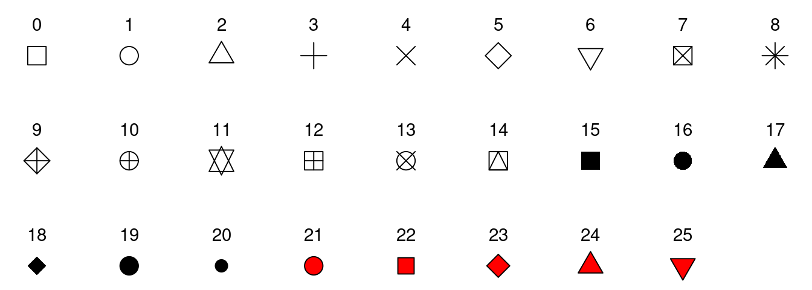
Shapes 21-24 take a fill and a colour aesthetic, whereas all the other shapes just take colour.
If you want to change the shape from the default shapes, use scale_shape_manual().
ggplot(penguins,
aes(x = body_mass_g, y = bill_length_mm, colour = species, shape = species)) +
geom_point() +
scale_shape_manual(values = c(Adelie = 17, Chinstrap = 6, Gentoo = 16))Warning: Removed 2 rows containing missing values (geom_point).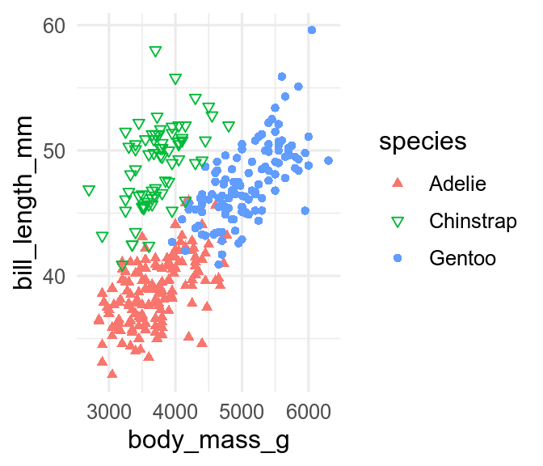
You can change the line types of all the lines made by, for example, geom_line() by setting the linetype.
ggplot(ChickWeight, aes(x = Time, y = weight, group = Chick, colour = Diet)) +
geom_line(linetype = "dashed")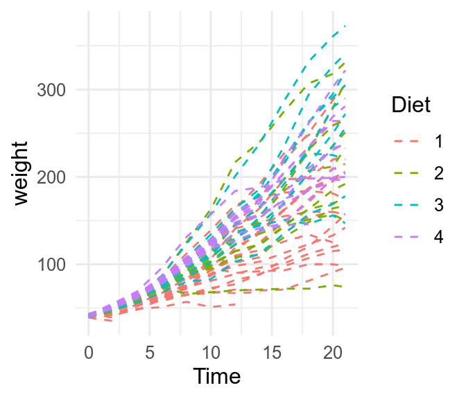
If you map a discrete variable to the linetype aesthetic, lines made by geom_line, geom_path, etc will have different line types or the different values in the variable. Line types can sometimes be used in addition to colour to make it easier to differentiate lines.
ggplot(ChickWeight, aes(x = Time, y = weight, group = Chick, colour = Diet, linetype = Diet)) +
geom_line()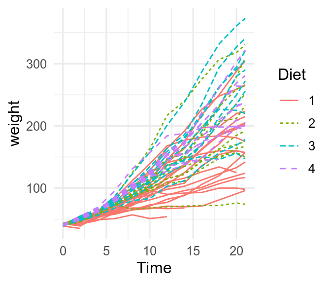
If you need to change the linetypes assigned to each value, you can use scale_linetype_manual and specify them by name (Figure 16.1).

Custom linetypes can also be made using of up to eight hexadecimal digits (1-9, A-F) that give the length of lines and gaps. "1FFF" would draw a dot followed by a long gap, a long line, and another long gap, and then the pattern would repeat.